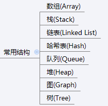

什么是数据结构:
数据结构是计算机存储、组织数据的方式。
数据结构是指相互之间存在一种或多种特定关系的数据元素的集合。
通常情况下，精心选择的数据结构可以带来更高的运行或者存储效率。数据结构往往同高效的检索算法和索引技术有关。
常见的数据结构,如右图:
Java中集合框架其实就是数据结构的实现的封装,今天是我们自己从头来模拟和实现数据结构.
不同的数据结构的操作性能是不同的:(有的查询性能很快,有的插入速度很快,有的是插入头和尾速度很快,有的做等值判断很快,有的做范围查找很快,有的允许元素重复,有的不允许重复等等),在开发中如何选择,要根据具体的需求来选择.
最简单的数据结构就是数组.
数据结构的作用:
1:模拟生活中数据的存储(存储班上每个同学的信息)(增删改查操作).
1):保存一个同学的信息.
2):删除一个同学的信息.
3):更改某一个同学的信息.
4):查询某一个同学的信息.
5):查询多个同学的信息.
2:作为程序员开发的工具.
发现某一个操作经常使用,每次使用都得重新定义,麻烦. 把共同的操作封装成工具.
ArrayList,LinkedList,String,StringBuilder(char[]数组的封装工具).

增强代码健壮性和安全性